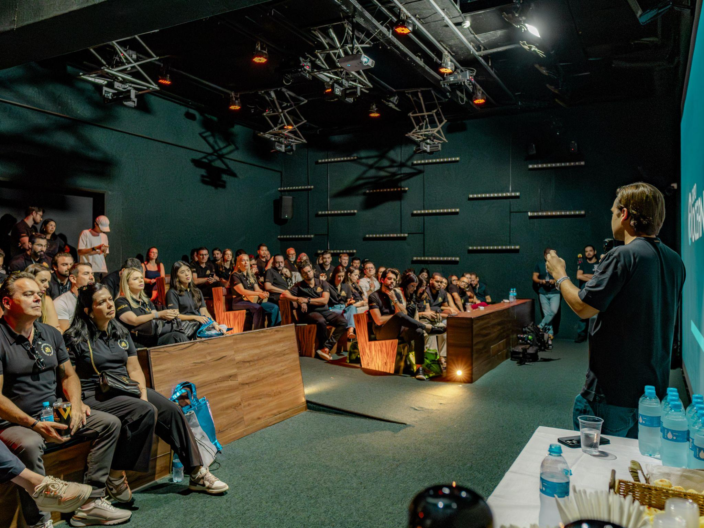
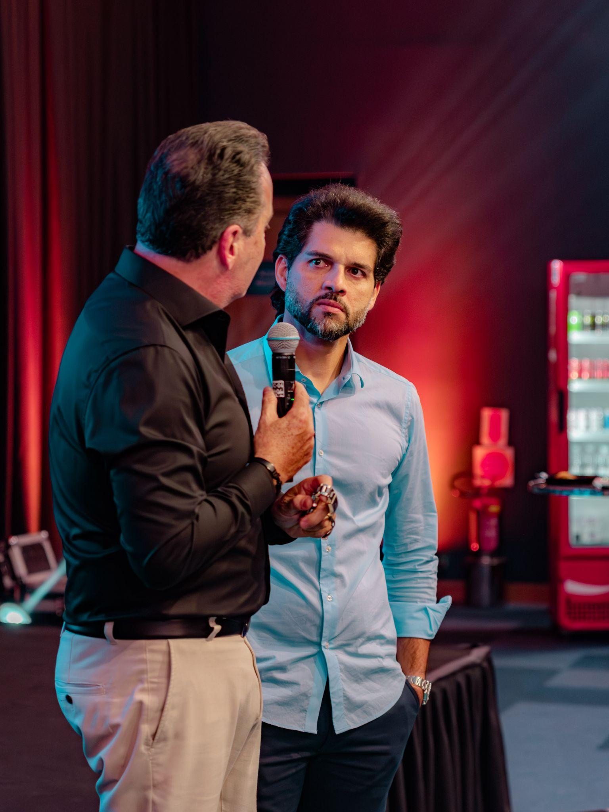

Scripts, sequências e roteiros para fechar a venda de R$ 85 mil — o mastermind oficial da Febracis, 12 meses com Paulo Vieira e diretores.
A apresentação mostra o ecossistema. O fechamento coloca o empresário dentro da sala.
Um empresário que fatura milhões percebe insegurança em segundos. Fale de R$ 85 mil com a mesma naturalidade com que fala de R$ 850. O closer que gagueja no preço mata a venda.
Nunca pergunte "você quer entrar?". Fale como quem já decidiu junto: "vamos garantir a sua cadeira na Maestria e começar a estruturar a sua escala".
Fechamento não é o momento de falar mais. É o momento de fazer a pergunta certa e sustentar o silêncio. O próximo a falar deve ser o empresário.
A Maestria são 12 meses de ecossistema contínuo. Cada mês de adiamento é um mês a menos de conselho, rede e direção — a decisão adiada encolhe a própria entrega.
Você não fecha o empresário quando ele entende a Maestria. Você fecha quando ele sente que ficar mais 12 meses sozinho no topo, sem conselho e sem rede, custa mais caro do que os R$ 85 mil.
O que sustenta um fechamento de R$ 85 mil.
Paulo Vieira em mentoria direta, diretores Febracis, especialistas como Vinicius David (Stanford, Fortune 100) e Rafael Galdino (+R$ 200 milhões em lançamentos). Sustente cada frase com nome e número.
As entregas somadas valem ≈ R$ 275 mil. Ancore isso ANTES de falar em R$ 85 mil. Preço só assusta quem não viu a pilha de valor.
Mastermind é sala fechada: turma limitada, condição da turma com prazo. A vaga que ele adia hoje pode não existir na mesma condição amanhã.
Duas formas de dizer sim (12x ou à vista), segunda vaga com 50% OFF para o sócio, link oficial direto da Maestria. Decidir tem que ser mais simples que adiar.
Autoridade abre a porta. Valor derruba o preço. Escassez vence o adiamento. Facilidade assina o contrato.
O empresário avisa quando está pronto. Leia o sinal e avance na hora certa.
"Então, pelo que você me trouxe, a empresa cresce, mas cresce no caos — e você decide tudo sozinho, sem ninguém do seu nível para trocar. É isso?"
"É exatamente isso que a Maestria resolve: 12 meses com Paulo Vieira e diretores Febracis, conselho estratégico, rede qualificada e direção — um ecossistema contínuo, não encontros pontuais."
"Somadas, as entregas passam de R$ 275 mil. O investimento integral é 12x de R$ 8.500." Deixe o contraste trabalhar.
"Faz sentido para o seu momento entrar para essa sala agora?"
Pergunte e pare. Quem falar primeiro depois da pergunta de fechamento, perde a posição.
"Perfeito. Vou garantir a sua vaga agora — te envio o link oficial da Maestria e seguimos juntos para o contrato."
Decore. Adapte ao tom do empresário. Diga com firmeza de quem vende sala de alto nível.
Assumptive: "Vamos garantir a sua cadeira na Maestria e começar os 12 meses com o pé direito?"
Direta: "Você me disse que decide tudo sozinho. A Maestria é o conselho que a sua empresa não tem. Vamos fechar?"
Resumo + CTA: "Mentoria direta com Paulo Vieira, 9 estratégicos, 9 táticos, Interbusiness internacional e a rede dos maiores empresários da região. É esse nível que você quer, certo? Então o próximo passo é a sua vaga."
Foco na escala: "Daqui a 12 meses a sua empresa vai estar maior de qualquer jeito. A pergunta é: maior no caos ou maior com estrutura, conselho e rede? Quando você quer começar a segunda opção?"
Compromisso pequeno: "Se a condição de investimento fizer sentido para o seu caixa, você entra hoje?"
Escassez da turma: "A condição desta turma é 50% OFF — 12x de R$ 4.250 — e ela tem prazo. Garanto a sua vaga nessa condição agora?" (valores de referência; confirme a condição vigente)
Custo da espera: "Cada mês fora da sala é um encontro com o Paulo que aconteceu sem você. Não faz mais sentido começar agora?"
Fechamento de autoridade: "Os maiores empresários do Brasil e da região já estão nessa sala. Hoje eu reservo o seu lugar ao lado deles — confirma?"
Não pergunte "sim ou não". Ofereça duas formas de dizer sim.
"Fica melhor para o seu caixa em 12x de R$ 8.500 ou nos R$ 85.000 à vista?"
Qualquer resposta é um avanço para o contrato — nenhuma é "não".
"Com o 50% OFF da turma, fica 12x de R$ 4.250 ou R$ 42.500 à vista — qual das duas você prefere?"
Valores de referência de oferta em turma; confirme a condição vigente antes de ofertar.
"Você garante só a sua vaga ou já aproveita a segunda vaga com 50% OFF para o seu sócio?"
Eleva o ticket e coloca o decisor ao lado dele dentro da sala.
"Prefere abrir a sua jornada pela Mente Mestra com o Paulo ou pelo encontro tático de Estratégia?"
O foco vai para o "como começar", não o "se começa".
Ao oferecer duas opções, você remove a opção invisível de não decidir. O cérebro do empresário sai de "compro ou não compro R$ 85 mil" e entra em "12x ou à vista". Use somente depois que a pilha de R$ 275 mil em entregas já está na mesa.
Uma escada de pequenos sins, construída sobre as dores do empresário, que torna o sim final inevitável.
"Hoje as decisões mais pesadas da empresa estão só nas suas costas, concorda?" → Sim.
"E isso acontece porque você não tem um conselho qualificado nem gente do seu nível para trocar, faz sentido?" → Sim.
"Se você tivesse direção estratégica, rede de alto nível e acesso direto ao Paulo Vieira por 12 meses, o jogo mudava, certo?" → Sim.
"E é exatamente isso que a Maestria entrega: um ecossistema contínuo — estratégico, tático, presencial e internacional. Ficou claro?" → Sim.
"A jornada é de 12 meses. Quanto antes você entra, antes a sua escala deixa de ser caótica, concorda?" → Sim.
"Então vamos garantir a sua cadeira agora: 12x de R$ 8.500 ou à vista?" → o sim que já estava construído.
Não decidir também é uma decisão — e no topo, é a mais cara de todas.
"Vamos fazer a conta juntos: nos próximos 12 meses, uma sala vai se reunir com o Paulo Vieira, com especialistas de IA, comercial e estratégia, e com os maiores empresários da região fazendo negócio entre si. A única variável é se você está dentro ou fora dela. Quanto custa para a sua empresa mais um ano de decisão solitária e crescimento no caos? Eu garanto que é mais do que a Maestria."
A pergunta não é "quanto custa a Maestria?". É "quanto custa mais um ano fora da sala?".
Feche pela conexão emocional, espelhando a realidade do dono:
"Eu entendo. Você construiu tudo isso praticamente sozinho — e é exatamente por isso que está cansado: todo peso estratégico termina em você. A Maestria existe para você nunca mais decidir sozinho. Deixa eu te colocar dentro dessa sala?"
O empresário sente que você entendeu a solidão do topo — a dor que ele não fala em voz alta. A venda vira aliança, não transação.

A ferramenta mais poderosa do fechamento high-ticket não tem palavra nenhuma.
Faça a pergunta de fechamento — "12x de R$ 8.500 ou à vista?" — e cale-se por completo. Não preencha o vazio.
Em R$ 85 mil, o silêncio é o espaço onde o empresário faz a conta dele. Interromper esse cálculo é roubar dele a decisão que estava nascendo.
Perguntar e emendar: "...mas se estiver pesado a gente vê outra coisa...". Você acabou de negociar contra si mesmo sem ele ter pedido.
Após a pergunta, conte até 10. Sustente o olhar. Beba água. Não resgate o empresário do desconforto — é nele que a decisão acontece.
Ótimo: o silêncio fez a objeção real aparecer — preço, sócio, timing. Agora você sabe exatamente o que tratar para fechar.
"Pergunte. Pare. Espere. Quem sustenta o silêncio, sustenta o preço."
Tire o medo de errar R$ 85 mil das costas do empresário — e devolva o risco para onde ele realmente está.
Acolher: "Concordo — é investimento de dono, não despesa."
Reverter: "Muito comparado a quê? As entregas somam cerca de R$ 275 mil, e uma única conexão certa nessa sala paga a Maestria inteira."
Fechar: "Se o valor está claro, o que resolve é a forma: 12x de R$ 8.500 ou à vista?"
Acolher: "Claro. Decisão desse tamanho merece clareza."
Reverter: "Me ajuda a pensar junto: o que está em aberto — o investimento, a agenda dos 12 meses ou se a sala é para o seu momento?"
Fechar: "Se resolvermos esse ponto agora, garantimos a sua vaga na condição da turma?"
Acolher: "Ótimo instinto — o CIS transforma."
Reverter: "Só que a Maestria já inclui 6 CIS Setor Black, BHP, FGPC e Assessment. Você não escolhe entre um e outro — a Maestria contém o caminho inteiro, com o Paulo do seu lado."
Fechar: "Faz sentido entrar direto no nível de cima? Reservo a sua cadeira?"
Toda objeção final é um pedido de segurança. Dê a segurança e refaça a pergunta de fechamento — sempre.
"Me conta o momento da sua empresa hoje — o que mais pesa nas suas decisões como dono?"
Escave as dores: crescimento caótico, solidão do topo, preso na operação, sem rede de alto nível. Faça-o verbalizar.
Custo de ficar fora: "Quanto custa mais um ano decidindo sozinho e crescendo no caos?"
Apresente as 5 frentes conectadas à dor dele — mentoria direta, encontros, imersões, Interbusiness, rede. Não despeje lista.
Paulo Vieira e diretores, especialistas de elite, unidades pelo mundo, os maiores empresários do Brasil na sala.
"≈ R$ 275 mil em entregas por 12x de R$ 8.500" — e a condição da turma quando aplicável. Yes Ladder pelo caminho.
Choice close + silêncio: "12x de R$ 8.500 ou R$ 85.000 à vista?" — e cale-se.
Próximo passo concreto na hora: "Vou garantir a sua cadeira agora — te envio o link oficial da Maestria e formalizamos."
"O empresário não compra 12 meses de mentoria. Ele compra nunca mais decidir sozinho. Coloque-o na sala."